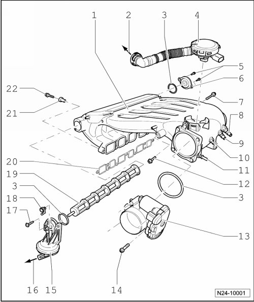

Intake Manifold: Service and Repair
Intake Manifold, Assembly Overview

1 Intake manifold
2 To cylinder head cover
3 Seal
• Replace
4 Crankcase vent valve
• With Positive Crankcase Ventilation (PCV) heating element (N79)
5 10 Nm
6 Bearing cap
• For change over roller of intake manifold change over
7 20 Nm
8 Vacuum connection
• For brake servo or brake system vacuum pump (V192)
9 Vacuum connection
• For leak detection pump (V144)
10 Vacuum connection
• For Secondary Air Injection (AIR) solenoid valve (N112) and intake manifold change over valve (N156)
11 Vacuum connection
• For evaporative emission (EVAP) canister purge regulator valve (N80)
• --> [ (Item 15) Vent line ] EVAP System, Assembly Overview
12 20 Nm
13 Throttle valve control module (J338)
• Terminals of harness connector are gold-plated
• When replacing, adapt Engine Control Module (ECM) to throttle valve control module "Guided Functions".
14 10 Nm
15 Vacuum actuator
• For variable intake manifold
16 To Intake Manifold Tuning (IMT) valve (N156)
17 10 Nm
18 Control lever
• For change over roller
• Ensure seated tightly
19 Change over roller
20 Gasket
• Note installation position
• Replace if damaged
21 Dowel sleeve
• For intake manifold mount
• For attaching seal
22 13 Nm